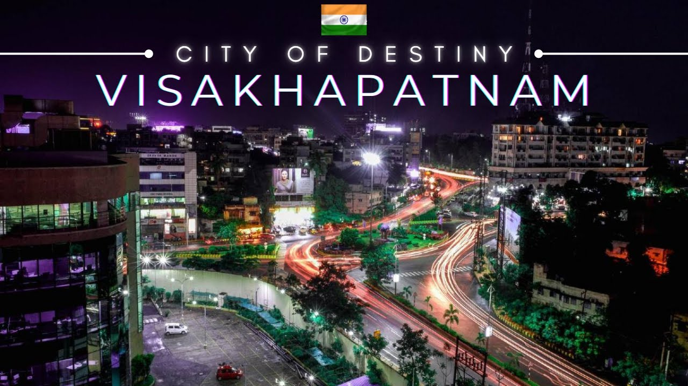
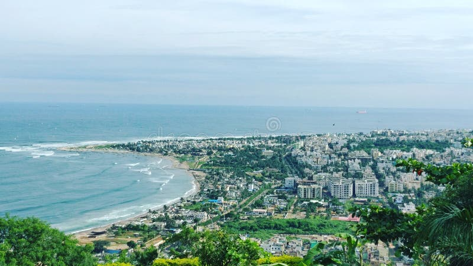
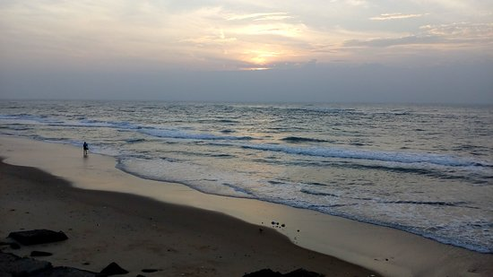
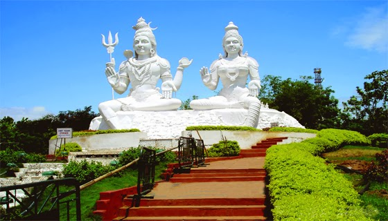
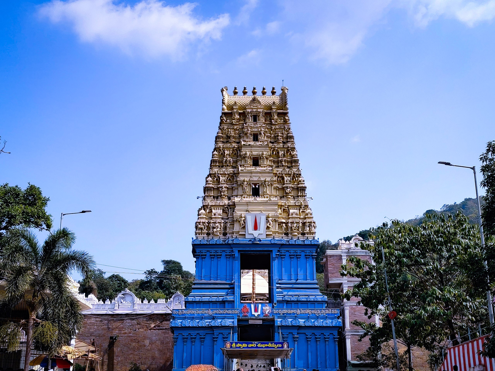
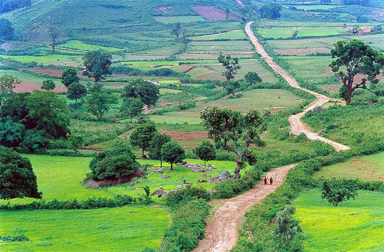

VISAKHAPATNAM-City of Destiny
Visakhapatnam, also commonly known as Vizag,
is one of the oldest port cities in the country.
Situated in the heart of Andhra Pradesh, Visakhapatnam
is known for its picturesque beaches and serene landscape,
as well as a rich cultural past, which makes it an ideal spot
for a fantastic coastal vacation


TOURIST ATTRACTIONS
-
RK Beach
- A popular beach with a long shoreline, offering scenic views of the Bay of Bengal.
- The Submarine Museum, located on the beach, showcases a decommissioned submarine.

-
Kailasagiri
- A hilltop park with panoramic views of the city and the sea.
- Features a giant sculpture of Lord Shiva and Parvati, toy train rides, and well-maintained gardens.

-
Simhachalam Temple
- A famous Hindu temple dedicated to Lord Narasimha, located on Simhachalam Hill.
- Known for its intricate architecture and religious significance.

-
Araku Valley
- A picturesque hill station located about 115 km from Vizag.
- Offers lush green landscapes, tribal villages, and a pleasant climate.
